Back in 2022, I was looking for leather randoseru and discovered Herz. They sell randoseru, but they also sell a lot of leather bags, not just backpacks for children. The bags looked very well made with minimal branding. I wanted a bag that I can use daily for at least 10 years and most bags I see either don't look like they'll hold up or are covered in ugly branding.
After a week of terrible deliberation, I was able to decide which Herz bag I wanted to order. Thankfully, the JPY to USD exchange rate is much more favorable now than it was in 2022. I chose the Cartella Mini 3 way in red and two strap covers in 24mm red. I really love the randoseru look, but the Cartella Mini looks much more adult than actually carrying around a randoseru! I honestly like the square shape of the Palga Mini more, but ultimately decided it would end up being too small for me. I chose the shorter version of the strap covers. I decided the long ones would have been too long for my shoulders and the randoseru straps were a bit too backpack for a purse.
The order was submitted 3/15/2026 to Zenmarket. It arrived at Zenmarket 4/10/2026. There was a mishap in choosing how to ship the items to me, so the bag arrived 4/20/2026 and the strap covers arrived 4/21/2026. It was shipped via UPS.
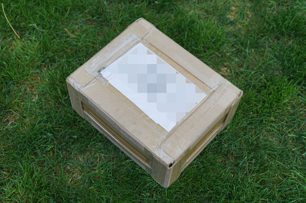
Zenmarket packaged this so well that I'm sure it would have survived kickball practice.
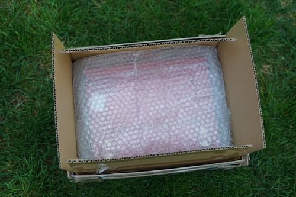
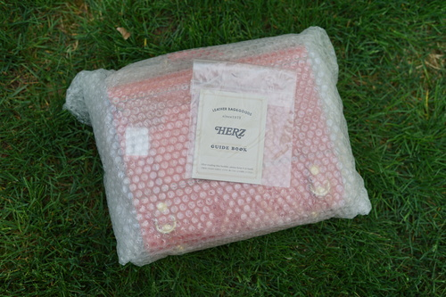
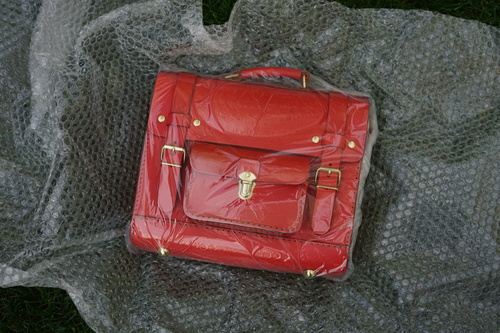
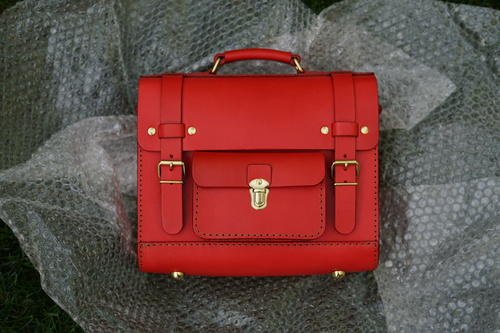
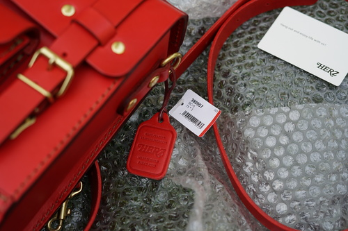
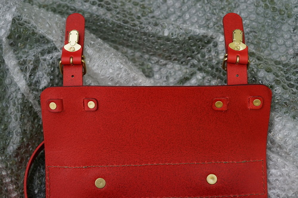
On one side, the strap holder holes are more frayed. This is only visible from the inside.
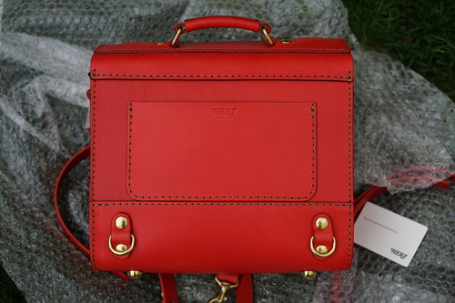
This is the only branding on the bag. I love that so much.
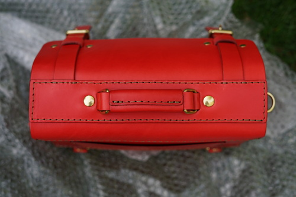
The stitch here on the top is a little curved but I don't think it's enough to complain about.
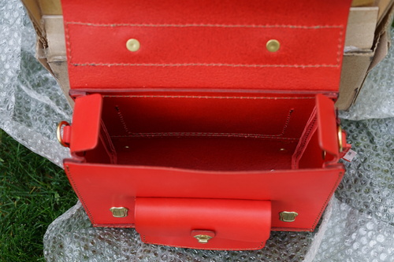
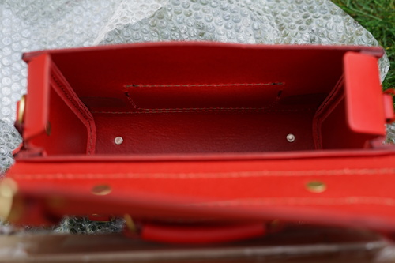
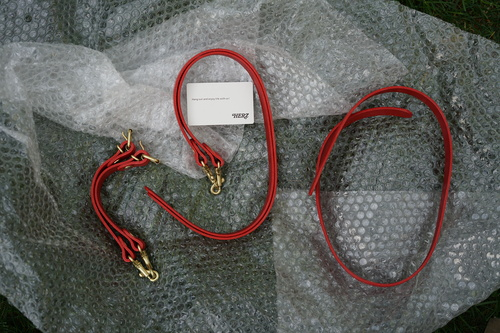
3 way bags come with 2 short belted straps, 2 medium backpack straps, and one longer shoulder strap.
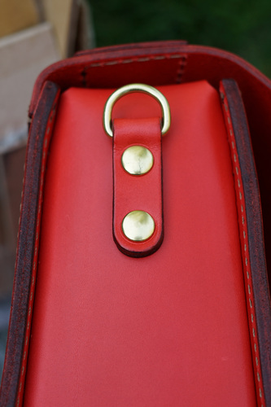
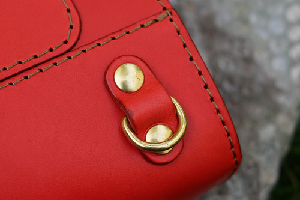
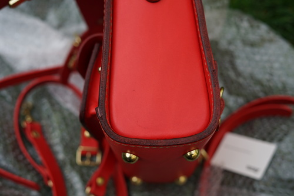
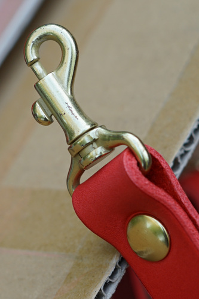
Some small issues are that the hardware comes prescratched and there are a few dark smudges on the leather.
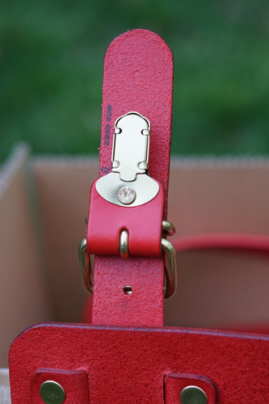
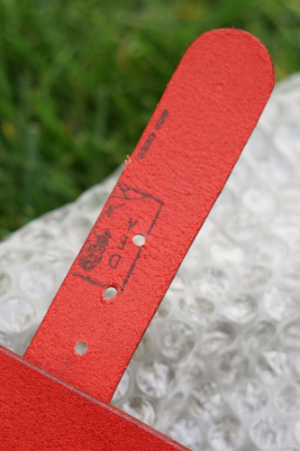
I got a leather label on one of the straps. It's hidden under the latch belt.
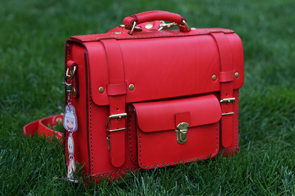
The leather feels tough and the stitching looks well done. It's sturdy! I picked exactly the right size for myself. It'd be in a tough position to get all my stuff in the smaller version of the bag.
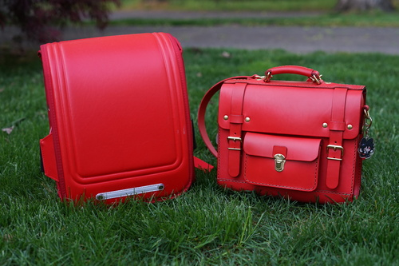
Here's a comparison with Ryan's randoseru. I believe his was purchased from Aliexpress and not leather or a Japanese brand.
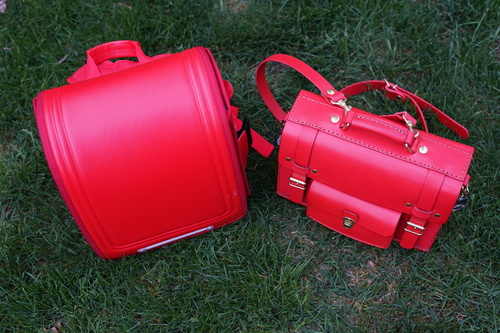
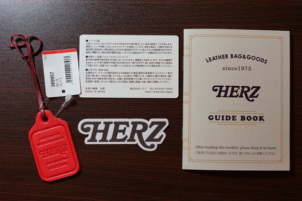
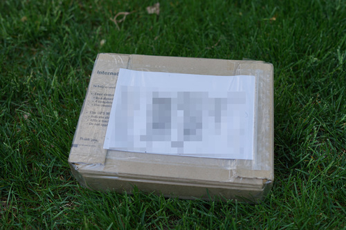
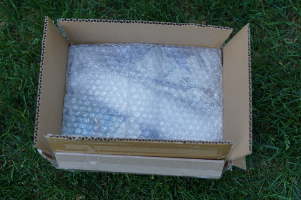
It started sprinkling during my second box opening! I had to go back inside.
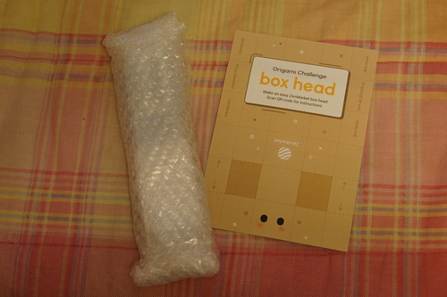
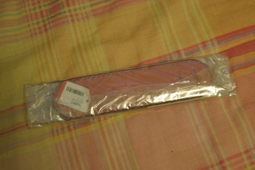
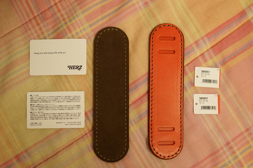
From the information in the listing, the bottom of the strap covers are not leather, but ultrasuede. As far as I know, ultrasuede doesn't degrade like pleather, so this may be okay? They are also strap covers, which can be much more easily replaced than the whole bag. They're very tight to get on, but I'd think you'd want that so they dont fall down the strap!
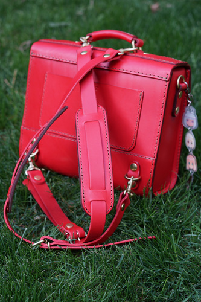
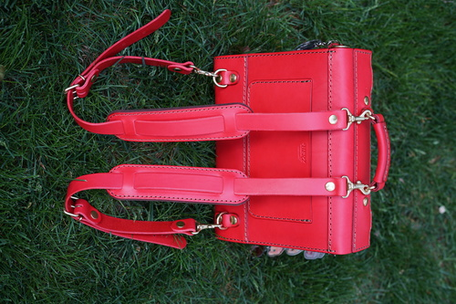
The straps get turned around since they are on a spinning hook. This is easier to avoid with the strap covers on.
I have already had one instance where the top of the strap unhooked while taking the bag on and off. I'm praying I accidentally hit the lever to open the hook and it won't be a common occurence.
Some red dye from the leather came off on my shirt in the armpit area, where I was sweating.
It is hard to know where to grap the front straps to insert the snap to close it. This could take some getting used to.
There are two metal hoops on the side that I'm using for keychains, that are actually for purse straps. In my photos, I have them facing downwards, but they choose to stay upwards.
I'll update with anything that comes up as I use the bag.